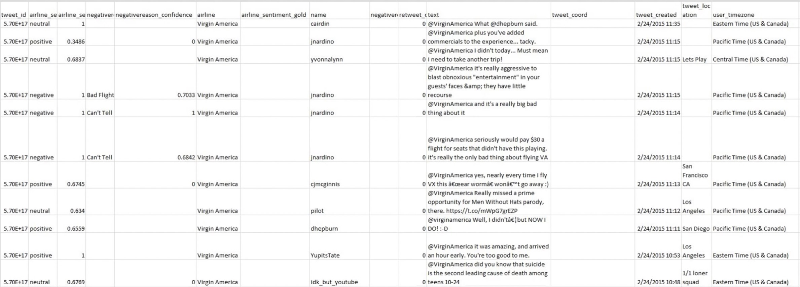
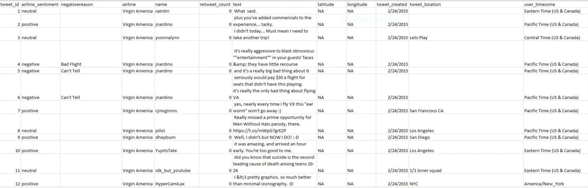
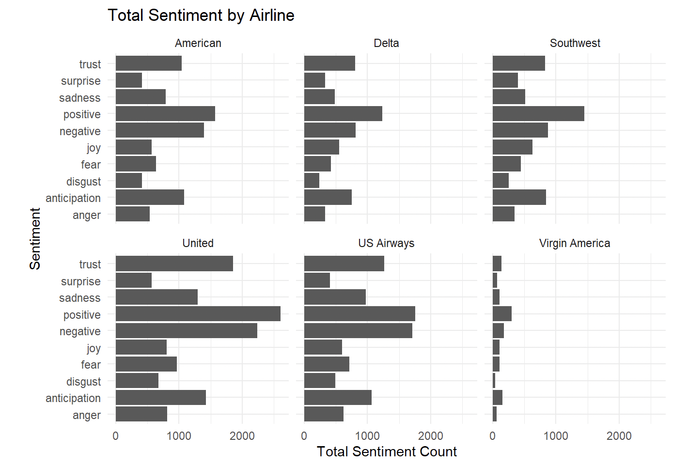
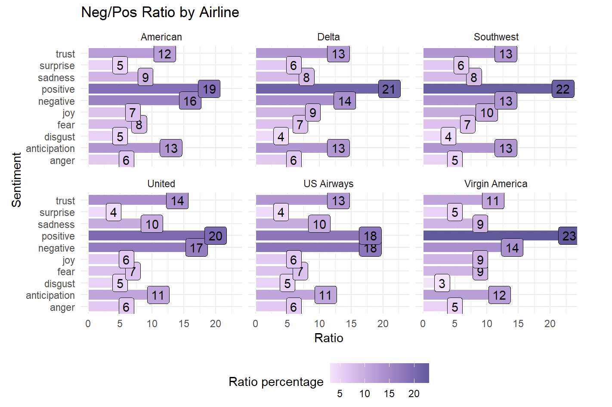

Airline Sentiment Project

Project goal:
The goal for this project was to determine customer satisfaction by analyzing tweets from six major airlines. The two main methods to analyze these tweets were sentiment analysis, to determine the sentiment or emotion of the tweet and word clouds, for a visual representation of the most common used words. The six main airlines used were American, Delta, United Airlines, Southwest, US Airways, and Virgin Airlines.
Data Cleaning:
After getting rid of unwanted variables and unwanted characters, this is the new cleaned dataset:
The first step of the cleaning process included getting rid of variables such as airline_sentiment_confidence, airline_sentiment_gold, negativereason_confidence, and negativereason_gold. The next step was to fix the tweet_id column by getting rid of duplicates so there is a unique identifier for each tweet. The last was to remove the “@airline” tag from each tweet so it does not interfere with any of the text analyses.
Word Clouds:
Word clouds were used to visualize the overall distribution of words from the tweets. The word “flight” was added to the list of stop words after the initial word cloud creation as it was heavily skewing the distribution. The word cloud on the left uses all of the tweets from the dataset. Overall, you can see the words that you would expect when talking about traveling such as “airport”, “baggage”, and “luggage”. The word cloud on the right uses hashtags from the tweets. With this word cloud you can get a glimpse of some of the issues that customers are dealing with such as poor customer service, baggage, and delayed flights. It is also interesting that all of the hashtags are negative. This already gives an idea of the overall sentiment of the customer tweets.
Sentiment Analysis:
For the sentiment analysis I used the NRC lexicon which contains words related to eight basic emotions as well as positive and negative. These eight emotions include:
- Trust
- Surprise
- Sadness
- Joy
- Fear
- Disgust
- Anticipation
- Anger
I felt that the NRC lexicon would be the most useful since it would give us more insight into what customer concerns are and how they are feeling compared to the other two lexicons which use either a number scale or a simple “positive or negative” option.
When I initially did the sentiment analysis I calculated the total for each sentiment per airline but, since there was such a large gap in the number of tweets between each airline it was hard to accurately compare them. In order to compensate for the different number of tweets for each airline I calculated a ratio for each instead. This ratio is calculated by taking the number of each sentiment compared to the total number of tweets for each airline.
As seen in the chart above, Virgin Airlines had the most positive sentiment at 23% while United Airlines had the most negative sentiment at 17%. The high percentages for the feeling of anticipation were understandable due to the nature of flying and being at the airport. This may include being excited for an upcoming trip, the lack of certainty about your luggage making it to your destination, or the chance of your flight being delayed or cancelled. Overall the ratio of sentiment was quite similar for each airline. This may indicate that each airline is facing similar types of issues.
Conclusion:
In conclusion, we identified the positive, negative, and neutral tweets, and discovered that most of the customers were concerned with delayed or cancelled flights. It appears to be more of an industry issue rather than an individual airline issue. Virgin America did have the most positive sentiment but this could also be due to the lack of tweets for this particular airline. Hypothetically we could use these findings to discuss with the airlines different methods of compensation for delayed or cancelled flights. Perhaps of fliers of cancelled or delayed flights were properly compensated we could negate the potential PR effects of these negative tweets.